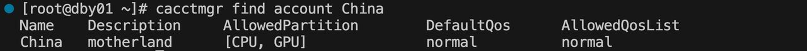

cacctmgr 管理用户/账户信息
cacctmgr 可以管理账户/用户信息，包括添加账户/用户、删除账户/用户、查找账户/用户。
Crane作业调度系统中有三个用户角色：
- 系统管理员（Admin）：可以增删查改任何账户和用户信息
- 账户管理员（Operator）：可以修改部分该账户信息及账户下用户信息
- 普通用户(None)： 仅可以查看部分信息，不可以修改所有用户和账户信息
1. 添加账户
cacctmgr add account -name=China -describe=motherland -partition=[CPU,GPU,UU] -Qos=normal
主要参数
- Qos： 服务质量
- describe： 账户描述信息
- name： 账户名
- parent： 父账户
- partition： 可使用的分区名
- 例
cacctmgr add account -N=China -D=motherland -p=CPU,GPU -q=normalcacctmgr add account --name=China --description=motherland --partition=CPU,GPU --qos_list=normal
- 例
2. 添加用户
系统管理员可以添加任意账户的用户， 账号管理员可以添加同一账号下的新用户。
cacctmgr add user --name=pokemon --account=China --level=admin
主要参数
- account： 账户名
- level： 用户权限
- Admin： 系统管理员
- Operator： 账户管理员
- None： 普通用户
- name： 用户名
- partition： 可使用的分区名
- 例
useradd pokemon cacctmgr add user --name=pokemon --account=China --level=admin
- 例
3. 删除用户
系统管理员可以删除任意账户下的用户， 账户管理员可以删除同一账户下的新用户。
cacctmgr delete user pokemon
#等同于cacctmgr remove user pokemon

4. 删除账户
仅系统管理员可以删除账户
cacctmgr delete account TEST
5. 查找用户
所有用户均可以使用查询功能
cacctmgr find user pokemon

6. 查找账户
cacctmgr cacctmgr find account China

7. 修改账户
系统管理员可以修改任意信息， 账户管理员可以修改本身账户的信息，但不能更改账户的父账户。
cacctmgr modify account -name=China -describe=Splendid
主要参数
- Qos： 服务质量
- describe： 账户描述信息
- name： 账户名
- parent： 父账户
- partition： 可使用的分区名
- type： 对账户运行的分区操作
- add： 默认是添加操作
- delete: 删除
- overwrite： 覆盖

8. 修改用户
系统管理员可以修改任意信息， 账户管理员可以修改同账户下用户的信息，但不能更改用户的账户。
cacctmgr modify user --name=pokemon -L=none
主要参数
- account： 账户名
- level： 用户权限
- Admin： 系统管理员
- Operator： 账户管理员
- None： 普通用户
- name： 用户名
- partition： 可使用的分区名

9. 显示账户树
系统管理员会显示数据库所有根账户的账户树， 账户管理员和用户会显示本身账户的账户树。
cacctmgr show accounts

10. 显示用户
系统管理员会显示所有用户， 账户管理员和用户会显示同一账户下的所有用户。
cacctmgr show users